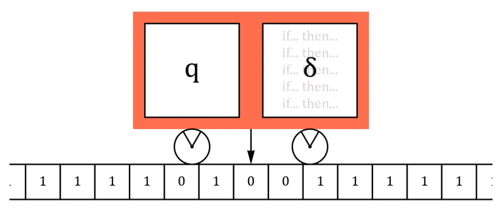
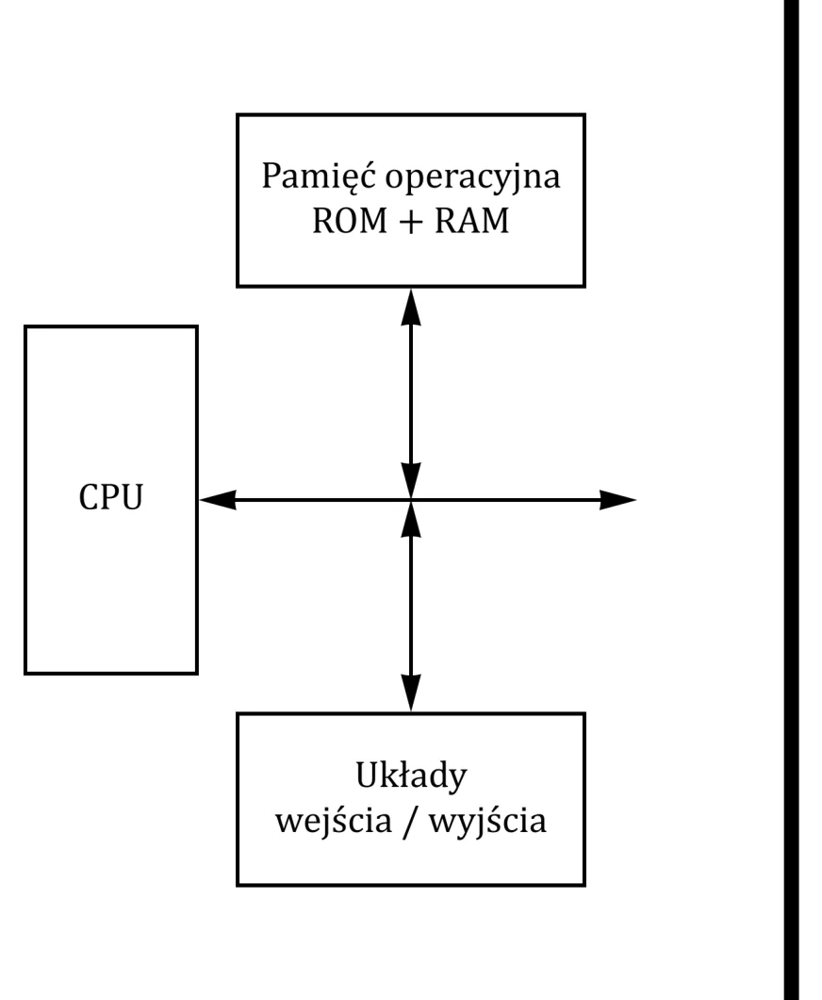
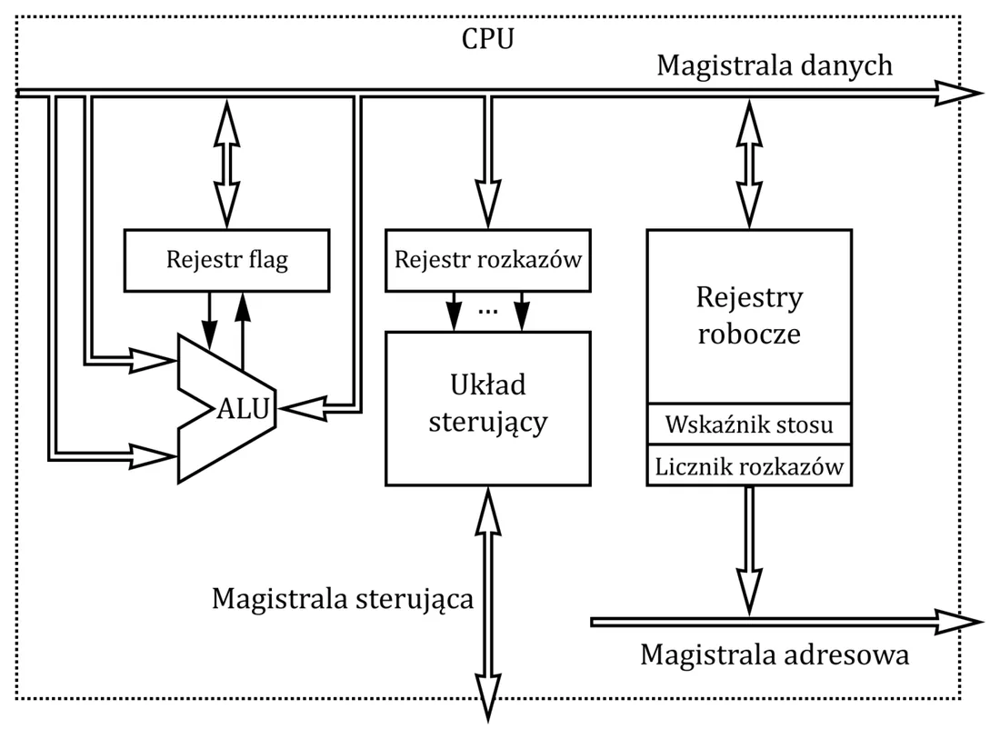
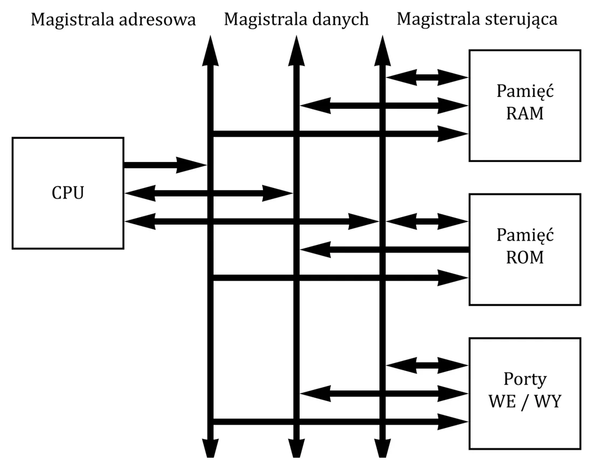
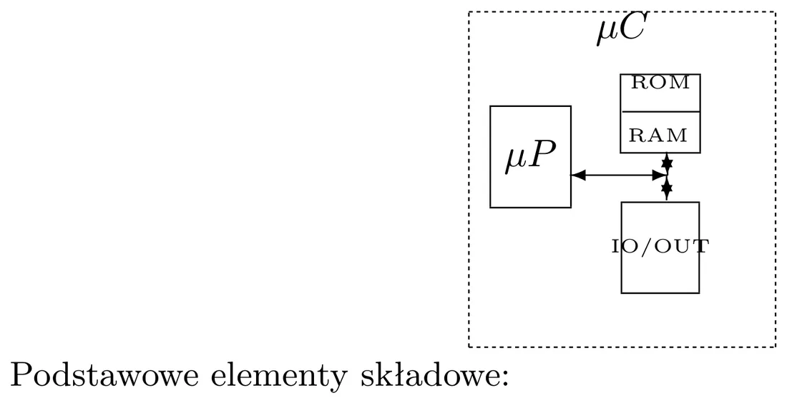
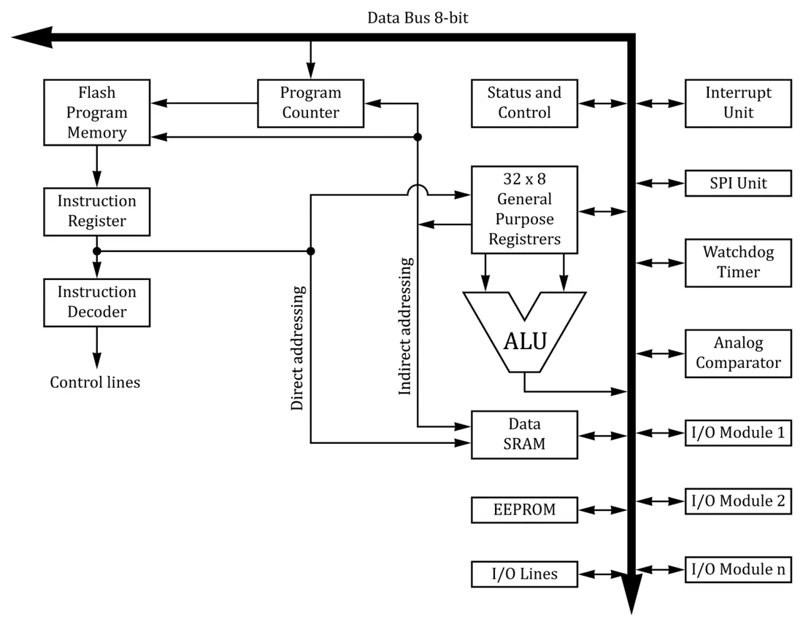
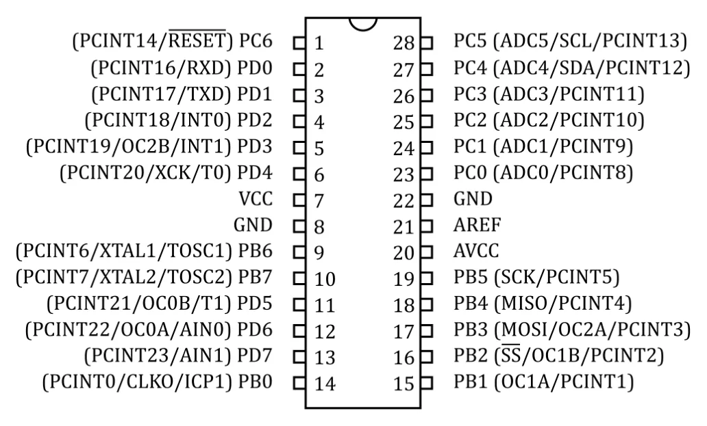
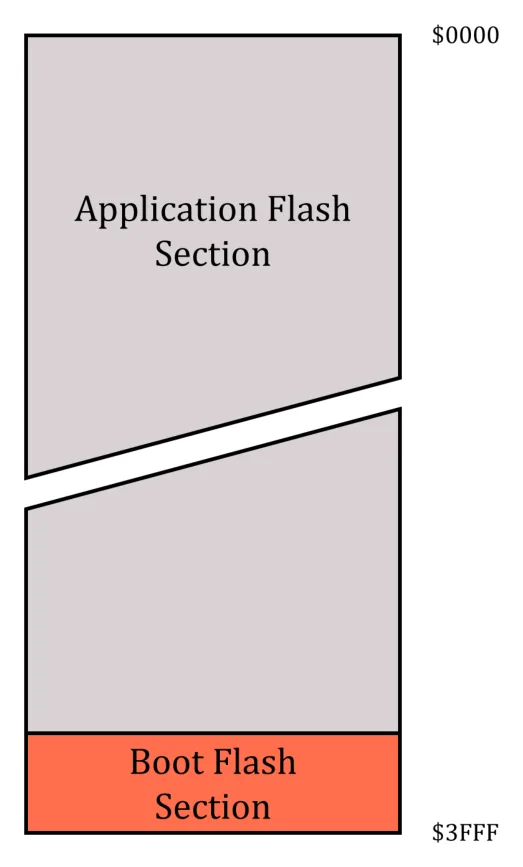
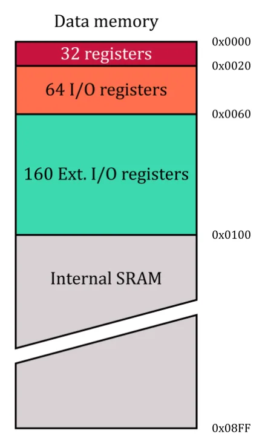
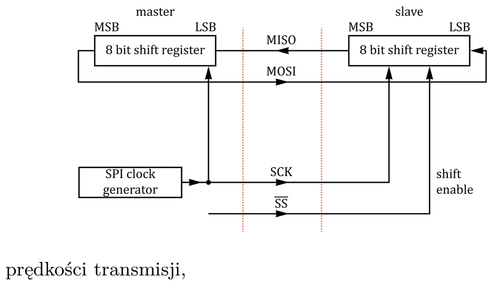

Trochę historii
Wykład zaczyna się od długiej listy dat. W skrócie:
| Kiedy | Co |
|---|---|
| ok. 500 p.n.e. | abakus — pierwsze liczydła |
| 1617–1642 | kostki Napiera, suwak logarytmiczny, Pascalina — pierwsza maszyna licząca |
| 1822–1842 | maszyna Babbage'a; Ada Lovelace — pierwsza programistka |
| 1854 | George Boole — rachunek logiczny |
| 1937 | Alan Turing — teoria maszyny uniwersalnej |
| 1945 | John von Neumann — idea komputera z programem w pamięci |
| 1943–1946 | ENIAC — pierwszy komputer na lampach |
| 1971 | Intel 4004 — pierwszy mikroprocesor |
| 1981 | IBM PC — początek ery komputerów osobistych |
Maszyna Turinga
Teoretyczny model „maszyny, która wykonuje algorytm”: taśma z symbolami, głowica czytająco-pisząca i tablica reguł.


Formalnie: {Q, Σ, δ, q0, F} — zbiór stanów Q, alfabet taśmy Σ, funkcja przejścia δ (dla danego stanu i odczytanego symbolu mówi: nowy stan, co zapisać i czy przesunąć głowicę w prawo R, w lewo L, czy zostać N), stan początkowy q0 i zbiór stanów końcowych F.
Od autora strony (nie z wykładu)
Zauważ podobieństwo do wykładu 10: maszyna Turinga to automat ze stanami i funkcją przejść, tylko z dodatkową, nieskończoną taśmą jako pamięcią.
Architektura von Neumanna i harwardzka


Komputer von Neumanna (1945) składa się z trzech części:
- procesor z jednostką arytmetyczno-logiczną (ALU),
- pamięć — zawiera i dane, i program,
- urządzenia wejścia/wyjścia.
Cechy: skończona lista rozkazów; program można wprowadzić i przechowywać w pamięci tak jak dane; rozkazy są odczytywane z pamięci i wykonywane po kolei.
Architektura harwardzka: pamięć programu jest oddzielona od pamięci danych. Jest prostsza i szybsza; stosuje się ją w procesorach sygnałowych i powszechnie w mikrokontrolerach (program w pamięci ROM/Flash, dane w RAM).
Po ludzku
Procesor to kucharz, pamięć to szafka. U von Neumanna książka kucharska (program) i składniki (dane) leżą w tej samej szafce. W architekturze harwardzkiej są dwie osobne szafki — kucharz może jedną ręką czytać przepis, a drugą sięgać po składniki.
Co jest w środku procesora


- ALU — układ kombinacyjny wykonujący operacje arytmetyczne (suma, różnica) i logiczne (AND, OR) na danych z rejestrów (wykład 8).
- Układ sterujący — dekoduje rozkazy i steruje ich wykonaniem.
- Rejestry — mała, bardzo szybka pamięć wewnątrz procesora:
| Rejestr | Do czego |
|---|---|
| Akumulator (A, ACC) | współpracuje bezpośrednio z ALU |
| Licznik rozkazów PC | adres następnego rozkazu do wykonania |
| Rejestr rozkazów | kod rozkazu, który jest właśnie wykonywany |
| Wskaźnik stosu SP | wskazuje koniec (szczyt) stosu |
| Rejestr flag | bity ustawiane po operacji: zero, przeniesienie/nadmiar, parzystość… |
| Rejestry ogólnego przeznaczenia | robocze |
Magistrale


- adresowa — procesor podaje nią adres komórki pamięci lub urządzenia,
- danych — przesyła dane między procesorem a pamięcią lub urządzeniem,
- sterująca — sygnały sterujące (odczyt/zapis itd.).
Cykl rozkazowy
Rozkaz ma format: kod rozkazu + argumenty. Procesor w kółko robi trzy rzeczy:
Krok po kroku
- Pobranie (fetch) — kod rozkazu jest pobierany z pamięci do rejestru rozkazów.
- Dekodowanie (decode) — procesor rozpoznaje, jaki to rozkaz z jego listy.
- Wykonanie (execute) — wczytanie argumentów, wykonanie operacji, zapisanie wyniku w rejestrze lub pamięci.
CISC i RISC
| CISC (Complex Instruction Set) | RISC (Reduced Instruction Set) | |
|---|---|---|
| Rozkazy | dużo, złożone, specjalistyczne | mało, proste |
| Czas wykonania | od kilku do kilkunastu cykli, różnie | zwykle jeden cykl |
| Tryby adresowania | wiele (skomplikowany dekoder) | niewiele |
| Inne | część rozkazów rzadko używana; dużo czasu na przesyłanie pamięć ↔ rejestry | przetwarzanie potokowe (pipelining) |
Współczesne procesory PC z zewnątrz wyglądają jak CISC, ale w środku rozbijają rozkazy na mikrorozkazy wykonywane przez rdzeń RISC.
Mikrokontroler
Mikrokontroler (µC) to cały komputer w jednym układzie scalonym: procesor, pamięć RAM, pamięć programu i układy wejścia/wyjścia. Nazwa pochodzi od głównego zastosowania — sterowania (control) urządzeniami.


Typowy mikrokontroler zawiera:
- jednostkę obliczeniową (często 8-bitową), pamięć danych (RAM) i pamięć programu,
- uniwersalne porty wejścia/wyjścia (piny, które mogą pełnić też inne funkcje),
- kontrolery transmisji: UART, SPI, I²C, USB, CAN,
- przetworniki analogowo-cyfrowe (ADC), czasem cyfrowo-analogowe,
- timery, układ watchdog (pilnuje, czy program się nie zawiesił), czasem czujniki.
System wbudowany (embedded system) to komputer specjalnego przeznaczenia, będący częścią urządzenia, którym steruje (pralka, samochód, termostat). Zwykle jest oparty na mikrokontrolerze.
Z materiałów do ćwiczeń
Mikroprocesor — tylko jednostka obliczeniowa. Mikrokontroler = mikroprocesor + pamięć + kontrolery + porty. Płytka rozwojowa (np. Arduino UNO R3) — mikrokontroler z gotowym zasilaniem, USB i wyprowadzonymi pinami. Komputer jednopłytkowy (np. Raspberry Pi) — pełny komputer z systemem operacyjnym. Arduino nadaje się do prostych, powtarzalnych zadań (czujnik → reakcja); Raspberry Pi — do złożonych (sieć, obraz).
Taktowanie i programowanie
Zegar mikrokontrolera może pochodzić z: zewnętrznego sygnału, własnego generatora z rezonatorem kwarcowym (kwarc + dwa kondensatory) albo wbudowanego generatora RC.
Programy pisze się w językach wysokiego poziomu (np. C) albo w asemblerze. Do pamięci programu trafiają na trzy sposoby:
- programatorem wysokonapięciowym (12 V) — najstarszy sposób,
- ISP (In-System Programming) — bez wyjmowania układu z urządzenia,
- przez bootloader — mały program, który po resecie odbiera nowy program przez łącze szeregowe i sam zapisuje go do pamięci. Tak działa Arduino (przez USB).
Popularne rodziny: Intel 8051, AVR firmy Atmel (na nich są zajęcia), PIC firmy Microchip.
ATmega328 — mikrokontroler z Arduino UNO


| Cecha | Wartość |
|---|---|
| Architektura | RISC, 131 instrukcji, 32 rejestry 8-bitowe |
| Pamięć programu (Flash) | 32 kB, ok. 10 000 cykli zapisu |
| Pamięć danych (SRAM) | 2 kB |
| Pamięć nieulotna (EEPROM) | 1024 bajty, ok. 100 000 cykli zapisu |
| Timery | 8-bitowe i 16-bitowy, z preskalerem; kanały PWM |
| Przetwornik A/C | 10-bitowy, 8 kanałów (multipleksowanych) |
| Interfejsy | USART, SPI, Two-Wire (I²C) |
| Inne | watchdog, komparator analogowy, przerwania zewnętrzne i wewnętrzne |
| Zegar | do 16 MHz |


Wyprowadzenia: VCC (zasilanie), GND (masa), Port B, Port C (także wejścia przetwornika A/C i reset), Port D — dwukierunkowe porty z wewnętrznymi rezystorami podciągającymi; XTAL1/XTAL2 — kwarc; AREF — napięcie odniesienia przetwornika.
Pamięci




- Flash (program): 32 kB zorganizowane jako 16k słów 16-bitowych; licznik rozkazów PC jest 14-bitowy. Podzielona na sekcję aplikacji i sekcję bootloadera.
- SRAM (dane): na początku przestrzeni adresowej leżą 32 rejestry ogólnego przeznaczenia i rejestry wejścia/wyjścia, dalej 2048 komórek pamięci. Adresowanie: bezpośrednie i pośrednie (przez rejestry X, Y, Z — także z przesunięciem i z inkrementacją).
- EEPROM: pamięta po wyłączeniu zasilania; dostęp przez rejestry EEAR (adres), EEDR (dane), EECR (sterowanie).
- Peryferia obsługuje się przez rejestry I/O leżące w tej samej przestrzeni adresowej.
Zegar i reset
Źródła zegara: wewnętrzny generator (1, 2, 4 lub 8 MHz — bez dodatkowych elementów), zewnętrzny kwarc (do 16 MHz), kwarc zegarkowy 32,768 kHz, zewnętrzny układ RC, zewnętrzny sygnał zegarowy.
Źródła resetu: Power-on (włączenie zasilania), External (stan niski na pinie RESET), Watchdog (program się zawiesił), Brown-out (zasilanie spadło poniżej progu).
Peryferia w pigułce
- Przerwania zewnętrzne (INT0, INT1) — reakcja na zbocze lub poziom na pinie. Szczegóły: wykład 13.
- Timery/liczniki — odmierzanie czasu, zliczanie zdarzeń, generowanie częstotliwości i PWM; przepełnienie licznika wywołuje przerwanie.
- SPI — szybki, synchroniczny, full-duplex; tryb Master lub Slave.
- USART — łącze szeregowe (to przez nie działa
Serialw Arduino); 5–9 bitów danych, 1–2 bity stopu, bit parzystości. - Two-Wire (I²C) — 7-bitowy adres (128 adresów), do 400 kHz, Master/Slave.
- ADC — 10 bitów (wartości 0…1023), zakres 0…VCC, czas konwersji 65–260 µs, przerwanie po zakończeniu konwersji.


Interfejsy są omówione dokładniej w wykładzie 12.
Zadania na ćwiczenia (ze slajdu)
- Program wysyłający po resecie przez łącze szeregowe komunikat „Hello world”.
- Kalkulator wykonujący podstawowe działania na dwóch liczbach w zapisie infiksowym (każdą daną zatwierdza się Enterem).
- Kalkulator wczytujący całe wyrażenie naraz i analizujący je.
Krok po kroku: Ćwiczenie 12.